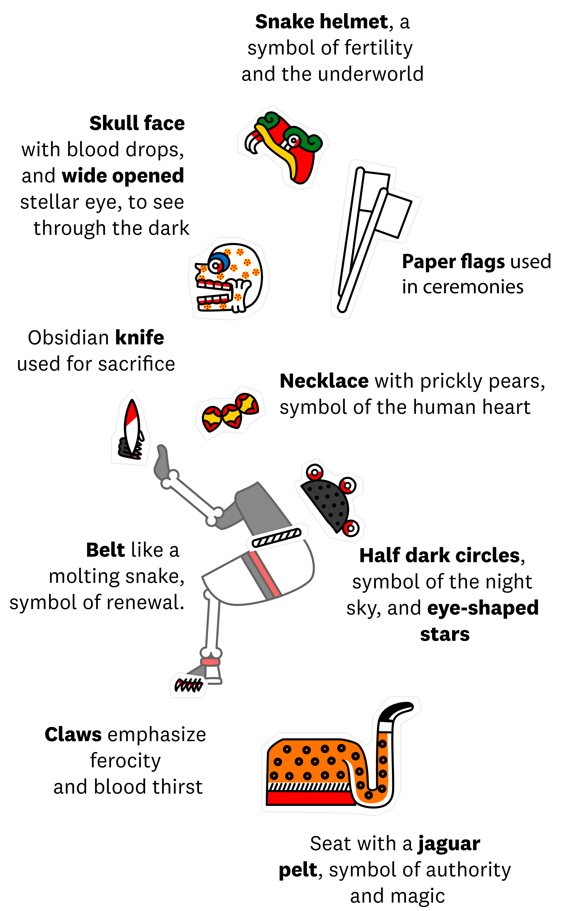
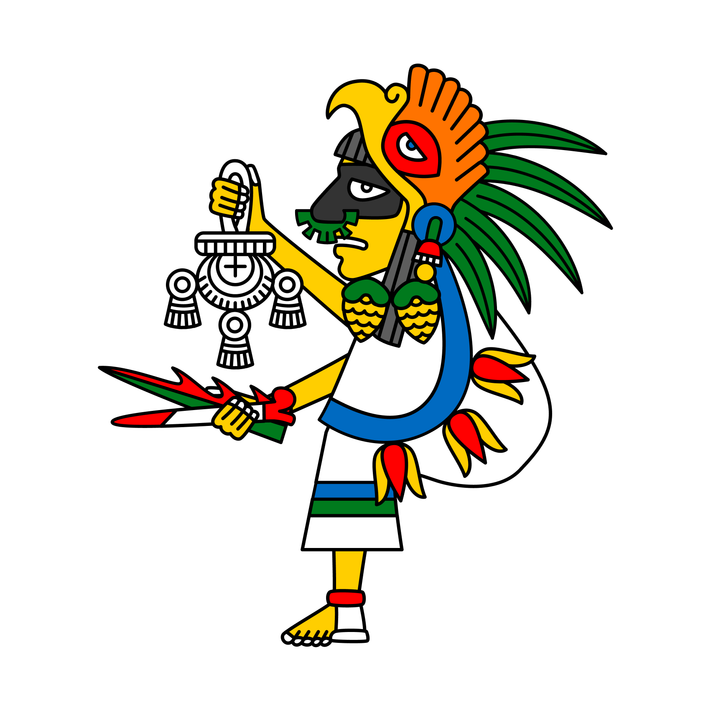
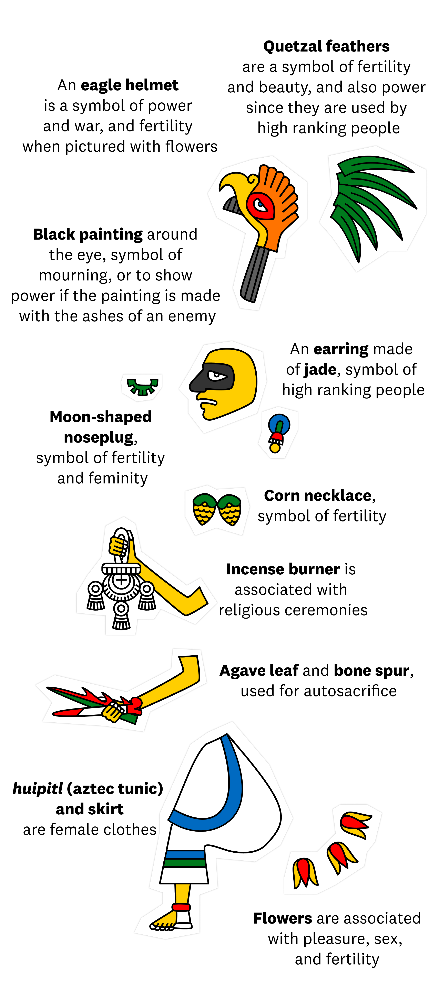

A Visual Guide to the Aztec Pantheon
South American and Mesoamerican civilizations have fascinated me since childhood, when I would watch The Mysterious Cities of Gold. This early 1980s Japanese-French anime series featured a solar-powered galleon ship, a golden, mechanical condor, three kids exploring the New World at the beginning of the Spanish Conquest, and a mini documentary at the end of each episode. Who could ask for more? (There was even a sequel in 2012!)
But, despite this enchantment, Quetzalcoatl and Tlaloc were the only gods I could identify, while I could name dozens of Greek, Egyptian or Norse Gods. Only ten years ago, I learned about Aztec codices and a whole world of deities, each taking care of some aspects of human life.
Using these codices, I tried to identify them all, like a Pokemon chaser, despite scattered, partial and sometimes contradictory sources. I finally collected and restored illustrations of more than a hundred gods.
Through these illustrations, I hope to commemorate the complexity of the Aztec Pantheon, make the academic research more accessible, and show how this civilization is still alive in our global culture. With luck, they will also help you see this society with the wonderment of your inner child’s eyes, just like I did all those years ago.
Aztec iconography
Aztec gods, in iconographic sources, are like paper dolls. Each has a base form that is “dressed” with important symbolic accessories. Even specialists have difficulty identifying gods as these symbols can be emphasized for a particular worship, or switched between deities if they share similar fields of competence. Thus, gods can have multiple disguises, also known as aspects or nahual, and will freely share them with others.
The Gods illustrated below are imaginary. These made-up illustrations show how symbols and attributes in real Aztec iconography were composed to depict a God’s domain, abilities and needs.
Imaginary God of Death
Imaginary God of Fertility
 The Aztec Pantheon
These symbols can be found in real Aztec iconography, like in the 137 restored illustrations below.
But Aztec Gods are rarely associated with a single domain. On the contrary, seemingly contradictory domains, like life and death, are often embodied by the same deity.
Until its rise as an academic field that strives for accuracy, history has been, by definition, written from a single point of view. Concerning our subject, we stumble upon a major difficulty: the Aztecs destroyed materials created by their rivals in order to justify the dominance of their empire. Furthermore, Spanish conquerors and Christian missionaries brought about an even bigger annihilation, toppling Aztec society and rewriting their works.
Fortunately, some of these missionaries tried to collect as much information as they could, especially pioneer of anthropology Bernardino de Sahagún, while others, like Bartolomé de Las Casas, fought for indigenous rights. Their work is still precious to historians.
Aztec, contextuals elements
- The daily life of the Aztecs,
- The Aztecs,
- The Aztec Empire,
- Les Aztèques : le peuple du cinquième Soleil,
Culture and Religion
- La religion mexica,
- Los oficios en la religion mexicana,
- Aztec thought and culture,
- Amoxaltepetl “Popol Vuh Azteca”,
- In the age of the Fifth Sun: Jacques Soustelle’s studies of Aztec religion,
- Aztec Mythology: The Influence of Aztec Mythology on Mexican Culture and History,
Primary Sources
- Historia general de las cosas de Nueva España,
- El panteón en la Historia General de las cosas de la Nueva España de fray Bernardino de Sahagún,
Iconographic analysis and identification
- Les dieux aztèques et leur iconographie,
- An Illustrated Dictionary of The Gods and Symbols of Ancient Mexico and the Maya,
- La pragmatique des dieux aztèques,
- Les règles de construction des dieux aztèques (Religions en Mésoamérique),
Work in progress
We have, so far, in our database around 137 gods. And another batch is in the “work in progress” phase, as we still lack information, iconographic resources or simply the time to render them in graphic vector.
We hope to improve and expand it in the future so, if you’re interested in this project, you can contact me for corrections in written or iconographic resources. Thank you in advance for your help!
Special mentions
A special thanks to Sylvie Peperstraete, Fiona Pugliese, Ingrid Bernal, Elizabeth Baquedano, Florian Melki, Patrick Lesbre and Ian Mursell for their help and advice during my research.
My favorite websites
Mexicolore, a wonderful and rich website for the general public about ancient cultures in Mexico.
MayaIncaAztec, an educational website about indigenous societies in America, where I published my first restorations.
My Corazon Mexica on Etsy and Facebook for their incredible drawings and costumes inspired by aztec mythology.